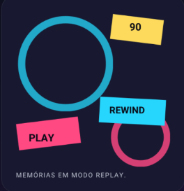

Antes dos anos 90
Classicos que chegaram para ficar
Duas producoes anteriores nos anos 90 que permaneceram vivas na memoria de quem cresceu cercado por fantasia e aventura.


80 90 2000
Uma viagem pela TV, pelos herois e pelas animações que transformaram tardes comund em grandes aventuras.

Antes dos anos 90
Duas producoes anteriores nos anos 90 que permaneceram vivas na memoria de quem cresceu cercado por fantasia e aventura.
Faixa especial
okusatsu,ação e personagens que viraram memoria efetiva.
O passado continua presente